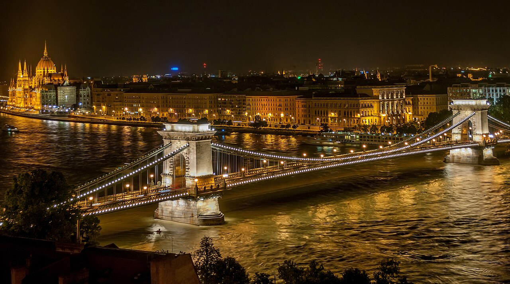

Венгрия

Венгрия — термальный отпуск с культурой в комплекте. Будапешт правильнее всего раскрывается с воды: вечерний круиз по Дунаю мимо подсвеченного Парламента — и вы понимаете, зачем город строили именно здесь, на обоих берегах. Купальни Сечени работают и зимой: пар над снегом, шахматисты в воде, и всё это — ритуал, к которому местные имеют пожизненный абонемент. Смотровая на Рыбацком бастионе даёт лучший вид на реку и мосты, а Кофе А́лександра внутри — как билет в другое столетие. Прогулка по Пешту складывается сама: проспект Андраши, Опера, площади с каштанами и кондитерские, где торт Dobos режут на глазах. Буда берёт холмами: крепость, лабиринт, виды. Вне столицы — изогнутое озеро Балатон с виноградниками северного берега и городки, которые пахнут ланошем, а также Токай: сладкое асу — вино, которое по закону собирается вручную, ягода за ягодой. Венгерская кухня честная и сытная: гуляш в котле, лангош с чесноком и паприка в том количестве, которое вы себе определите сами.
Что знать перед поездкой
- Сечени зимой — пар над снегом
- Дунай — лучше с воды вечером
- Токайское асу пробуйте смело: это сладко по правилам